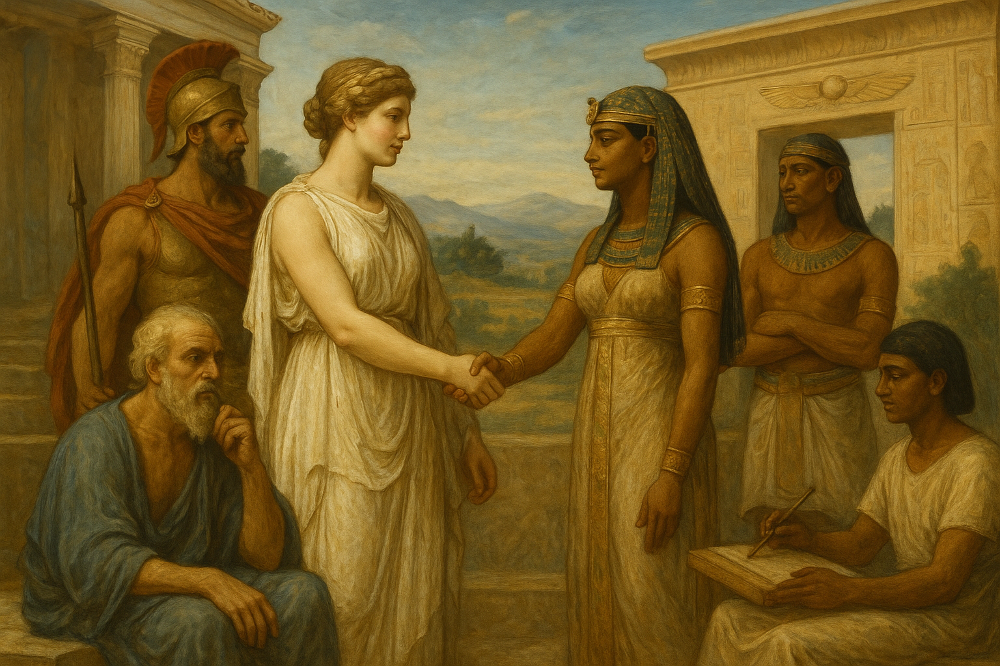
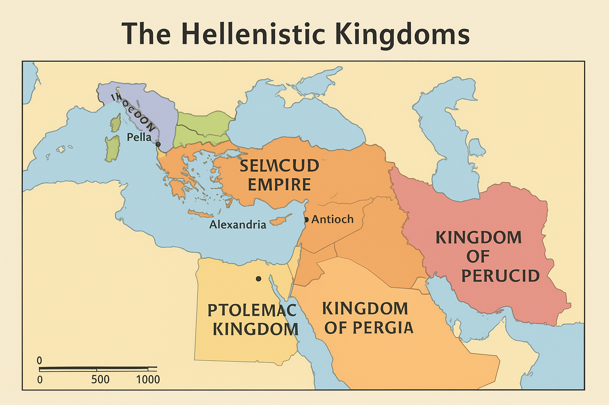
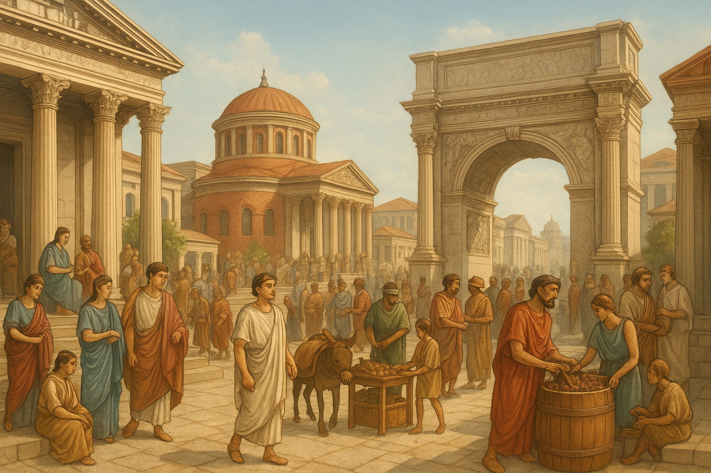
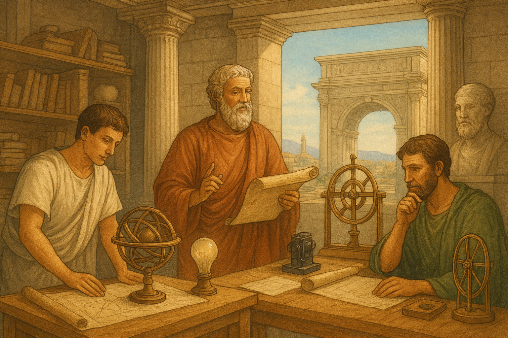

ההלניזם הוא תהליך שבו התרבות היוונית התפשטה במזרח הקדום, ובמקביל קלטה השפעות מהתרבויות המקומיות. כך נוצרה תרבות חדשה ומשותפת ברחבי האימפריה
ההלניזם
הוא השם שניתן לתרבות החדשה שנוצרה כתוצאה ממיזוג בין התרבות היוונית הקלאסית (המערב) לבין תרבויות המזרח הקדום (כגון מצרים, פרס, מסופוטמיה)
- :המרכיב הדומיננטי
- :השפעה הדדית
- :דת
- :מדיניות
המרכיב היווני (ההלני) היה הדומיננטי בתרבות זו, כפי שבא לידי ביטוי בשפה (יוונית קוינה), במוסדות השלטון ובאדריכלות
:למרות הדומיננטיות היוונית, התקיימה השפעה הדדית
אלים יווניים זוהו עם אלים מקומיים (סינקרטיזם דתי), לדוגמה, האל הפיניקי מלקרת זוהה עם הרקלס היווני [1.1]
אלכסנדר וממשיכיו אימצו מנהגים מזרחיים, כמו לבוש פרסי או מנהגי נישואין מצריים בקרב בית תלמי [1.4, 1.8]
לאחר מות אלכסנדר הגדול (323 לפנה"ס), מצביאיו (הדיאדוכים) חילקו את האימפריה לממלכות נפרדות שנאבקו ביניהן
:לאחר מותו של אלכסנדר מוקדון, התפצלה האימפריה העצומה שלו בין מצביאיו (הדיאדוכים – 'היורשים'). שלוש הממלכות העיקריות שנוצרו היו
שלטה במצרים (הבסיס העיקרי) ובאזורים סמוכים, כולל ארץ ישראל בחלק מהתקופה. בירתה הייתה אלכסנדריה
שלטה בשטח רחב במזרח, כולל סוריה, מסופוטמיה ופרס. בירתה הייתה אנטיוכיה
שלטה ביוון ובמקדוניה עצמה
הממלכות הללו נאבקו זו בזו על השליטה באזור, במיוחד על ארץ ישראל, שהייתה "גשר" חשוב בין בית תלמי לבית סלאוקוס
בתקופה ההלניסטית, הפוליס המסורתית דעכה, וקמו במקומה ערים ענק חדשות, ששימשו מרכזי ממשל וכלכלה תחת שלטון מלוכני
התרבות ההלניסטית הייתה תרבות קוסמופוליטית (תרבות של "העולם הרחב") [1.4]
"להיות הלני אינו עוד שאלה של מוצא אלא של נטייה. מי ששותף לחינוך שלנו ראוי להיקרא הלני יותר ממי ששותף לנו במוצאו" (איסוקרטס) [1.4]
ערים חדשות כמו אלכסנדריה במצרים ואנטיוכיה בסוריה הפכו למטרופולינים משגשגים, מרכזי סחר ותרבות. ערים אלו נקראו לעתים קרובות פוליס (עיר-מדינה), והן שימשו מוקד לחדירת התרבות היוונית
התקופה ההלניסטית נודעה בפריחה אינטלקטואלית משמעותית, בעיקר במתמטיקה, פיזיקה ובפילוסופיה המתמקדת בפרט
התקופה ההלניסטית הייתה תקופת שיא של מדע, טכנולוגיה ופילוסופיה שאופיינה בגישה אוניברסלית וברצון לחקור את העולם כולו [1.6, 1.3]:
:זו הייתה תקופתם של ענקים כמו
(הנדסה ופיזיקה)
(אבי הגאומטריה)
(מדידת היקף כדור הארץ)
הוקמו מוסדות מחקר חשובים, כמו המוזיאון והספרייה הגדולה של אלכסנדריה
במקום הדגש על הפוליס של התקופה הקלאסית, הפילוסופיה ההלניסטית התמקדה בשאלות אישיות. בתי הספר המרכזיים שצמחו היו:
דגלו בחוסן נפשי, שוויון בין בני אדם וחיים בהרמוניה עם הטבע וההיגיון (ה"לוגוס")
דגלו בהשגת אושר באמצעות הימנעות מכאב ופחד (אַטָרַקְסִיָה), וראו בהנאה המתונה את המטרה העליונה
ארץ ישראל הייתה נקודת מפגש קריטית בין התרבות ההלניסטית למסורת היהודית, והפכה לזירת התנגשות שהסתיימה במרד

:ההלניזם השפיע על ארץ ישראל באופן עמוק, ויצר מתח פנימי בעם היהודי
התרבות ההלניסטית חדרה ליהודה בהדרגה. היא השפיעה תחילה בעיקר על המעמדות הגבוהים והאמידים, שהחלו לאמץ את השפה היוונית (קוינה), לבוש יווני, ואף השתתפו במשחקי ספורט [1.4]
קבוצות מקרב היהודים, בעיקר מבית הכהונה הגדולה והאצולה, אימצו את ההלניזם באופן מלא, ואף ניסו להפוך את ירושלים לפוליס יוונית [1.5]
מיזוג התרבויות ההלניסטי יצר התנגשות עם ערכי היהדות (כמו איסור פולחן אלילי). ניסיון השלטון הסלווקי, ובראשו אנטיוכוס הרביעי, לכפות את התרבות היוונית ולאסור על קיום מצוות, הוביל לפרוץ מרד החשמונאים בשנת 167 לפנה"ס